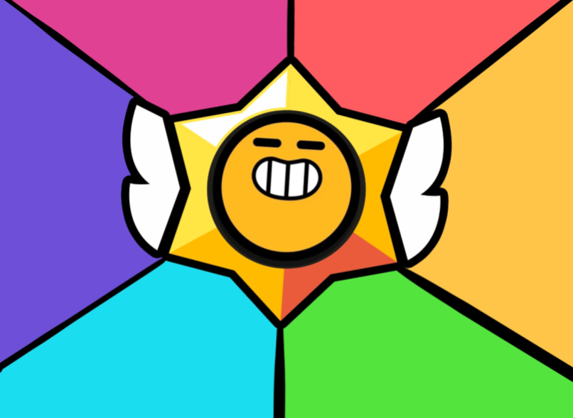

Brawl Stars Norge Wiki
Brawl Stars Norge Wiki
The Audacity

| Medlemmer | ~100 |
|---|---|
| Flest bans | Trym Ivar |
| Ledere | Star Virus og Waterflame |
The Audacity
Bakgrunn
The Audacity er en Discord server for den nå døde klubben The Audacity. Den ble lagd i 2018, og varte helt til slutten av 2021. Grunnen til at klubben døde var at alle de gode medlemmene gikk over til EtParGodeMenn.
Klubben
Klubben var lenge langt nede på topplistene, helt til Waterflame ble god.
Discord Server
The Audacity Discord-serveren er den mest aktive norske Discord-serveren etter at Brawl Stars Norge ble tatt over i tidlig 2022.
Prestasjoner
- Nummer 2 klubb i Norge
- Mest aktive norske Discord-server
- Over 1.000.000 meldinger
- Har Zimma som medlem